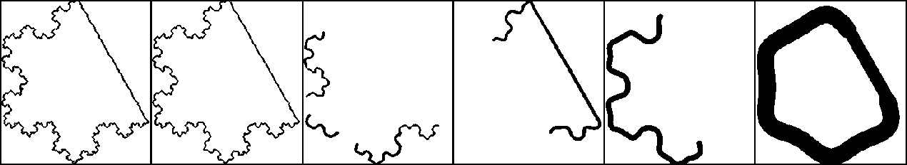
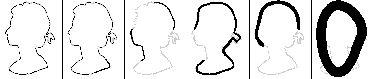

An alternative to representing curves at a single scale or a fixed number of multiple scales is to represent them only at their natural (i.e. most significant) scales. This allows all the important information concerning the different sized structures contained in the curve to be explicitly represented without the overhead of redundant representations of the curve.
Our earlier work developed techniques for determining global natural scales of curves, and found that the normalised number of points of inflection worked well. More recently we have looked at the more difficult task of estimating local natural scales of curves. Since these estimates are more sensitive to noise and other variations merging across and within scales is applied to reduce fragmentation.
Examples of the overlapping sections of the curve represented at their natural scales are shown below:
Koch snowflake

the Queen

More details are given in:
You can download code to implement the extraction of global natural scales.
return to Paul Rosin's homepage